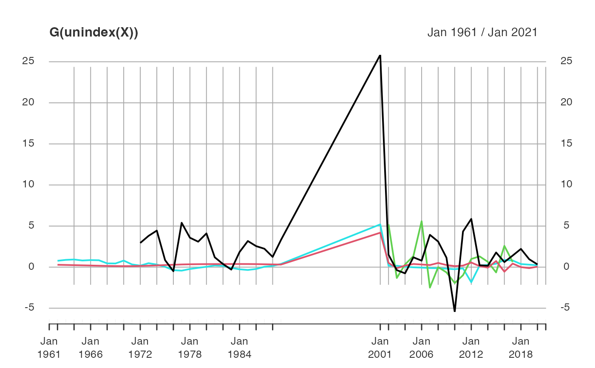

indexing.RdA fast and flexible indexed time series and panel data class that inherits from plm's 'pseries' and 'pdata.frame', but is more rigorous, natively handles irregularity, can be superimposed on any data.frame/list, matrix or vector, and supports ad-hoc computations inside data masking functions and model formulas.
## Create an 'indexed_frame' containing 'indexed_series'
findex_by(.X, ..., single = "auto", interact.ids = TRUE)
iby(.X, ..., single = "auto", interact.ids = TRUE) # Shorthand
## Retrieve the index ('index_df') from an 'indexed_frame' or 'indexed_series'
findex(x)
ix(x) # Shorthand
## Remove index from 'indexed_frame' or 'indexed_series' (i.e. get .X back)
unindex(x)
## Reindex 'indexed_frame' or 'indexed_series' (or index vectors / matrices)
reindex(x, index = findex(x), single = "auto")
## Check if 'indexed_frame', 'indexed_series', index or time vector is irregular
is_irregular(x, any_id = TRUE)
## Convert 'indexed_frame'/'indexed_series' to normal 'pdata.frame'/'pseries'
to_plm(x, row.names = FALSE)
# Subsetting & replacement methods: [(<-) methods call NextMethod().
# Also methods for fsubset, funique and roworder(v), na_omit (internal).
# S3 method for indexed_series
[(x, i, ..., drop.index.levels = "id")
# S3 method for indexed_frame
[(x, i, ..., drop.index.levels = "id")
# S3 method for indexed_frame
[(x, i, j) <- value
# S3 method for indexed_frame
$(x, name)
# S3 method for indexed_frame
$(x, name) <- value
# S3 method for indexed_frame
[[(x, i, ...)
# S3 method for indexed_frame
[[(x, i) <- value
# Index subsetting and printing: optimized using ss()
# S3 method for index_df
[(x, i, j, drop = FALSE, drop.index.levels = "id")
# S3 method for index_df
print(x, topn = 5, ...)a data frame or list-like object of equal-length columns.
an 'indexed_frame' or 'indexed_series'. findex also works with 'pseries' and 'pdata.frame's created with plm. For is_irregular x can also be an index (inherits 'pindex') or a vector representing time.
for findex_by: variables identifying the individual (id) and/or time dimensions of the data. Passed either as unquoted comma-separated column names or (tagged) expressions involving columns, or as a vector of column names, indices, a logical vector or a selector function. The time variable must enter last. See Examples. Otherwise: further arguments passed to NextMethod().
character. If only one indexing variable is supplied, this can be declared as "id" or "time" variable. "auto" chooses "id" if the variable has anyDuplicated values.
logical. If n > 2 indexing variables are passed, TRUE calls finteraction on the first n-1 of them (n'th variable must be time). FALSE keeps all variables in the index. The latter slows down computations of lags / differences etc. because ad-hoc interactions need to be computed, but gives more flexibility for scaling / centering / summarising over different data dimensions.
and index (inherits 'pindex'), or an atomic vector or list of factors matching the data dimensions. Atomic vectors or lists with 1 factor will must be declared, see single. Atomic vectors will additionally be grouped / turned into time-factors. See Details.
character. Subset methods also subset the index (= a data.frame of factors), and this argument regulates which factor levels should be dropped: either "all", "id", "time" or "none". The default "id" only drops levels from id's. "all" or "time" should be used with caution because time-factors may contain levels for missing time periods (gaps in irregular sequences, or periods within a sequence removed through subsetting), and dropping those levels would create a variable that is ordinal but no longer represents time. The benefit of dropping levels is that it can speed-up subsequent computations by reducing the size of intermediate vectors created in C++.
logical. For panel series: FALSE returns the irregularity check performed for each id, TRUE calls any on those checks.
logical. TRUE creates descriptive row-names (or names for pseries) as in plm. This can be expensive and is usually not required for plm models to work.
integer. The number of first and last rows to print.
Arguments passed to NextMethod, or as in the data.frame methods. Note that for index subsetting to work, i needs to be integer or logical (or an expression evaluation to integer or logical if x is a data.table).
The first thing to note about these new 'indexed_frame', 'indexed_series' and 'index_df' classes is that they inherit plm's 'pdata.frame', 'pseries' and 'pindex' classes, respectively. Hence they are sub-classes that add, improve, and, in some cases, remove functionality provided in plm, with the aim of striking an optimal balance of flexibility and performance. The inheritance means that all 'pseries' and 'pdata.frame' methods in collapse, and also some methods in plm, apply to them. Where compatibility or performance considerations allow for it, collapse will continue to create methods for plm's classes instead of the sub-classes.
The use of these sub-classes does not require much knowledge of plm, but as a basic background: A 'pdata.frame' is a data.frame with an index attribute: a data.frame of 2 factors identifying the individual and time-dimension of the data. When pulling a variable out of the pdata.frame using a method like $.pdata.frame or [[.pdata.frame (defined in plm), a 'pseries' is created by transferring the index attribute to the vector. Methods defined for functions like lag / flag etc. use the index for correct computations on this panel data, also inside plm's estimation commands.
Main Features and Enhancements
The 'indexed_frame' and 'indexed_series' classes extend and enhance 'pdata.frame' and 'pseries' in a number of critical dimensions. Most notably they:
Support both time series and panel data, by allowing indexation of data with one, two or more variables.
Are class-agnostic: any data.frame/list (such as data.table, tibble, tsibble, sf etc.) can become an 'indexed_frame' and continue to function as usual for most use cases. Similarly, any vector or matrix (such as ts, mts, xts) can become an 'indexed_series'. This also allows for transient workflows e.g. some_df |> findex_by(...) |> 'do something using collapse functions' |> unindex() |> 'continue working with some_df'.
Have a comprehensive and efficient set of methods for subsetting and manipulation, including methods for fsubset, funique, roworder(v) (internal) and na_omit (internal, na.omit also works but is slower). It is also possible to group indexed data with fgroup_by for transformations e.g. using fmutate, but aggregation requires unindex()ing.
Natively handle irregularity: time objects (such as 'Date', 'POSIXct' etc.) are passed to timeid, which efficiently determines the temporal structure by finding the greatest common divisor (GCD), and creates a time-factor with levels corresponding to a complete time-sequence. The latter is also done with plain numeric vectors, which are assumed to represent unit time steps (GDC = 1) and coerced to integer (but can also be passed through timeid if non-unitary). Character time variables are converted to factor, which might also capture irregular gaps in panel series. Using this time-factor in the index, collapse's functions efficiently perform correct computations on irregular sequences and panels without the need to 'expand' the data / fill gaps. is_irregular can be used to check for irregularity in the entire sequence / panel or separately for each individual in panel data.
Support computations inside data-masking functions and formulas, by virtue of "deep indexation": Each variable inside an 'indexed_frame' is an 'indexed_series' which contains in it's 'index_df' attribute an external pointer to the 'index_df' attribute of the frame. Functions operating on 'indexed_series' stored inside the frame (such as with(data, flag(column))) can fetch the index from this pointer. This allows worry-free application inside arbitrary data masking environments (with, %$%, attach, etc..) and estimation commands (glm, feols, lmrob etc..) without duplication of the index in memory. A limitation is that external pointers are only valid during the present R session, thus when saving an 'indexed_frame' and loading it again, you need to call data = reindex(data) before computing on it.
Indexed series also have simple Math and Ops methods, which apply the operation to the unindexed series and shallow copy the attributes of the original object to the result, unless the result it is a logical vector (from operations like !, == etc.). For Ops methods, if the LHS object is an 'indexed_series' its attributes are taken, otherwise the attributes of the RHS object are taken.
Limits to plm Compatibility
In contrast to 'pseries' and 'pdata.frame's, 'indexed_series' and 'indexed_frames' do not have descriptive "names" or "row.names" attributes attached to them, mainly for efficiency reasons.
Furthermore, the index is stored in an attribute named 'index_df' (same as the class name), not 'index' as in plm, mainly to make these classes work with data.table, tsibble and xts, which also utilize 'index' attributes. This for the most part poses no problem to plm compatibility because plm source code fetches the index using attr(x, "index"), and attr by default performs partial matching.
A much greater obstacle in working with plm is that some internal plm code is hinged on there being no [.pseries method, and the existence of [.indexed_series limits the use of these sub-classes in most plm estimation commands. Therefore the to_plm function is provided to efficiently coerce the sub-classes to ordinary plm objects before estimation. See Examples.
Overall these classes don't really benefit plm, especially given that collapse's plm methods also support native plm objects. However, they work very well inside other models and software, including stats models, fixest / lfe, and a whole bunch of time series and ML models. See Examples.
Performance Considerations
When indexing long time-series or panels with a single variable, setting single = "id" or "time" avoids a potentially expensive call to anyDuplicated. Note also that when panel-data are regular and sorted, omitting the time variable in the index can bring >= 2x performance improvements in operations like lagging and differencing (alternatively use shift = "row" argument to flag, fdiff etc.) .
When dealing with long Date or POSIXct time sequences, it may also be that the internal processing by timeid is slow simply because calling strftime on these sequences to create factor levels is slow. In this case you may choose to generate an index factor with integer levels by passing timeid(t) to findex_by or reindex (which by default generates a 'qG' object which is internally converted to factor using as_factor_qG. The lazy evaluation of expressions like as.character(seq_len(nlev)) in modern R makes this extremely efficient).
Print Method
The print methods for 'indexed_frame' and 'indexed_series' first call print(unindex(x), ...), followed by the index variables with the number of categories (index factor levels) in square brackets. If the time factor contains unused levels (= irregularity in the sequence), the square brackets indicate the number of used levels (periods), followed by the total number of levels (periods in the sequence) in parentheses.
opts <- options(max.print = 100)
# Indexing panel data ----------------------------------------------------------
wldi <- findex_by(wlddev, iso3c, year)
wldi
#> country iso3c date year decade region income OECD PCGDP
#> 1 Afghanistan AFG 1961-01-01 1960 1960 South Asia Low income FALSE NA
#> 2 Afghanistan AFG 1962-01-01 1961 1960 South Asia Low income FALSE NA
#> 3 Afghanistan AFG 1963-01-01 1962 1960 South Asia Low income FALSE NA
#> 4 Afghanistan AFG 1964-01-01 1963 1960 South Asia Low income FALSE NA
#> 5 Afghanistan AFG 1965-01-01 1964 1960 South Asia Low income FALSE NA
#> 6 Afghanistan AFG 1966-01-01 1965 1960 South Asia Low income FALSE NA
#> 7 Afghanistan AFG 1967-01-01 1966 1960 South Asia Low income FALSE NA
#> LIFEEX GINI ODA POP
#> 1 32.446 NA 116769997 8996973
#> 2 32.962 NA 232080002 9169410
#> 3 33.471 NA 112839996 9351441
#> 4 33.971 NA 237720001 9543205
#> 5 34.463 NA 295920013 9744781
#> 6 34.948 NA 341839996 9956320
#> 7 35.430 NA 311609985 10174836
#> [ reached 'max' / getOption("max.print") -- omitted 13169 rows ]
#>
#> Indexed by: iso3c [216] | year [61]
wldi[1:100,1] # Works like a data frame
#> [1] "Afghanistan" "Afghanistan" "Afghanistan" "Afghanistan" "Afghanistan"
#> [6] "Afghanistan" "Afghanistan" "Afghanistan" "Afghanistan" "Afghanistan"
#> [11] "Afghanistan" "Afghanistan" "Afghanistan" "Afghanistan" "Afghanistan"
#> [16] "Afghanistan" "Afghanistan" "Afghanistan" "Afghanistan" "Afghanistan"
#> [21] "Afghanistan" "Afghanistan" "Afghanistan" "Afghanistan" "Afghanistan"
#> [26] "Afghanistan" "Afghanistan" "Afghanistan" "Afghanistan" "Afghanistan"
#> [31] "Afghanistan" "Afghanistan" "Afghanistan" "Afghanistan" "Afghanistan"
#> [36] "Afghanistan" "Afghanistan" "Afghanistan" "Afghanistan" "Afghanistan"
#> [41] "Afghanistan" "Afghanistan" "Afghanistan" "Afghanistan" "Afghanistan"
#> [46] "Afghanistan" "Afghanistan" "Afghanistan" "Afghanistan" "Afghanistan"
#> [51] "Afghanistan" "Afghanistan" "Afghanistan" "Afghanistan" "Afghanistan"
#> [56] "Afghanistan" "Afghanistan" "Afghanistan" "Afghanistan" "Afghanistan"
#> [61] "Afghanistan" "Albania" "Albania" "Albania" "Albania"
#> [66] "Albania" "Albania" "Albania" "Albania" "Albania"
#> [71] "Albania" "Albania" "Albania" "Albania" "Albania"
#> [76] "Albania" "Albania" "Albania" "Albania" "Albania"
#> [81] "Albania" "Albania" "Albania" "Albania" "Albania"
#> [86] "Albania" "Albania" "Albania" "Albania" "Albania"
#> [91] "Albania" "Albania" "Albania" "Albania" "Albania"
#> [96] "Albania" "Albania" "Albania" "Albania" "Albania"
#>
#> Indexed by: iso3c [2] | year [61]
POP <- wldi$POP # indexed_series
qsu(POP) # Summary statistics
#> N/T Mean SD Min Max
#> Overall 12919 24'245971.6 102'120674 2833 1.39771500e+09
#> Between 216 24'178573 98'616506.7 8343.3333 1.08786967e+09
#> Within 59.8102 24'245971.6 26'803077.4 -405'793067 510'077008
G(POP) # Population growth
#> [1] NA 1.9166113 1.9851986 2.0506358 2.1122464 2.1707928
#> [7] 2.1947467 2.2122224 2.2801797 2.4133823 2.5690449 2.7010262
#> [13] 2.7517016 2.6947859 2.5104297 2.2251761 2.0011805 1.7632030
#> [19] 1.2898645 0.5236261 -0.4067167 -1.3838794 -2.1952033 -2.6764778
#> [25] -2.6594766 -2.1802494 -1.6922892 -1.1217024 0.1160839 2.1593380
#> [31] 4.5786219 7.1437882 8.9219301 9.1888632 7.9607739 6.0608254
#> [37] 4.1013421 2.6716031 1.9664025 2.1941643 3.0197497 3.9799657
#> [43] 4.5993546 4.7790451 4.4162776 3.7513845 3.0356420 2.5251987
#> [49] 2.2941982 2.4259805 2.7846424 3.1930437 3.4663103 3.5563673
#> [55] 3.4125163 3.1249152 2.8172726 2.5810946 2.4134239 2.3387468
#> [61] NA NA 3.1700646 3.1039282 2.9978046 2.9225795
#> [67] 2.7922950 2.6695753 2.6650851 2.8832956 2.9384277 2.5836638
#> [73] 2.4525645 2.5263580 2.3906816 2.3238034 2.3278346 2.2327972
#> [79] 2.2379263 2.0974353 2.0093786 2.0690785 2.0231684 2.1357595
#> [85] 2.1435360 2.1262254 2.0772758 1.9520285 2.0171142 1.9046214
#> [91] 2.7243108 1.8153666 -0.6009964 -0.6045996 -0.6083081 -0.6120001
#> [97] -0.6157998 -0.6195840 -0.6234784 -0.6273582
#> [ reached getOption("max.print") -- omitted 13076 entries ]
#> attr(,"label")
#> [1] "Population, total"
#>
#> Indexed by: iso3c [216] | year [61]
STD(G(POP, c(1, 10))) # Within-standardized 1 and 10-year growth rates
#> G1 L10G1
#> [1,] NA NA
#> [2,] -2.404379e-01 NA
#> [3,] -2.122758e-01 NA
#> [4,] -1.854071e-01 NA
#> [5,] -1.601097e-01 NA
#> [6,] -1.360704e-01 NA
#> [7,] -1.262349e-01 NA
#> [8,] -1.190593e-01 NA
#> [9,] -9.115593e-02 NA
#> [10,] -3.646264e-02 NA
#> [11,] 2.745275e-02 -2.502986e-01
#> [12,] 8.164455e-02 -2.072055e-01
#> [13,] 1.024520e-01 -1.648010e-01
#> [14,] 7.908227e-02 -1.289204e-01
#> [15,] 3.385202e-03 -1.066142e-01
#> [16,] -1.137405e-01 -1.035575e-01
#> [17,] -2.057136e-01 -1.144404e-01
#> [18,] -3.034277e-01 -1.396334e-01
#> [19,] -4.977815e-01 -1.949160e-01
#> [20,] -8.124006e-01 -2.992510e-01
#> [21,] -1.194401e+00 -4.602688e-01
#> [22,] -1.595626e+00 -6.746138e-01
#> [23,] -1.928758e+00 -9.237424e-01
#> [24,] -2.126370e+00 -1.181362e+00
#> [25,] -2.119389e+00 -1.416777e+00
#> [26,] -1.922618e+00 -1.607795e+00
#> [27,] -1.722260e+00 -1.761378e+00
#> [28,] -1.487976e+00 -1.877266e+00
#> [29,] -9.797383e-01 -1.923294e+00
#> [30,] -1.407738e-01 -1.859412e+00
#> [31,] 8.525893e-01 -1.659693e+00
#> [32,] 1.905852e+00 -1.297409e+00
#> [33,] 2.635961e+00 -7.800175e-01
#> [34,] 2.745564e+00 -1.619956e-01
#> [35,] 2.241308e+00 4.585063e-01
#> [36,] 1.461185e+00 9.899186e-01
#> [37,] 6.566172e-01 1.392975e+00
#> [38,] 6.956334e-02 1.670811e+00
#> [39,] -2.199935e-01 1.809795e+00
#> [40,] -1.264740e-01 1.812406e+00
#> [41,] 2.125131e-01 1.698199e+00
#> [42,] 6.067798e-01 1.475333e+00
#> [43,] 8.611022e-01 1.184657e+00
#> [44,] 9.348836e-01 9.005781e-01
#> [45,] 7.859304e-01 6.789725e-01
#> [46,] 5.129239e-01 5.368227e-01
#> [47,] 2.190385e-01 4.714477e-01
#> [48,] 9.449382e-03 4.624347e-01
#> [49,] -8.539992e-02 4.827251e-01
#> [50,] -3.128982e-02 4.970885e-01
#> [ reached getOption("max.print") -- omitted 13126 rows ]
#> attr(,"label")
#> [1] "Population, total"
#> attr(,"class")
#> [1] "numeric" "matrix"
#>
#> Indexed by: iso3c [216] | year [61]
psmat(POP) # Panel-Series Matrix
#> 1960 1961 1962 1963 1964 1965 1966 1967
#> ABW 5.42e+04 5.54e+04 5.62e+04 5.67e+04 5.70e+04 5.74e+04 5.77e+04 5.81e+04
#> 1968 1969 1970 1971 1972 1973 1974 1975
#> ABW 5.84e+04 5.87e+04 5.91e+04 5.94e+04 5.98e+04 6.02e+04 6.05e+04 6.07e+04
#> 1976 1977 1978 1979 1980 1981 1982 1983
#> ABW 6.06e+04 6.04e+04 6.01e+04 6.00e+04 6.01e+04 6.06e+04 6.13e+04 6.22e+04
#> 1984 1985 1986 1987 1988 1989 1990 1991
#> ABW 6.28e+04 6.30e+04 6.26e+04 6.18e+04 6.11e+04 6.10e+04 6.21e+04 6.46e+04
#> 1992 1993 1994 1995 1996 1997 1998 1999
#> ABW 6.82e+04 7.25e+04 7.67e+04 8.03e+04 8.32e+04 8.55e+04 8.73e+04 8.90e+04
#> 2000 2001 2002 2003 2004 2005 2006 2007
#> ABW 9.09e+04 9.29e+04 9.50e+04 9.70e+04 9.87e+04 1.00e+05 1.01e+05 1.01e+05
#> 2008 2009 2010 2011 2012 2013 2014 2015
#> ABW 1.01e+05 1.01e+05 1.02e+05 1.02e+05 1.03e+05 1.03e+05 1.04e+05 1.04e+05
#> 2016 2017 2018 2019 2020
#> ABW 1.05e+05 1.05e+05 1.06e+05 1.06e+05 NA
#> [ reached getOption("max.print") -- omitted 215 rows ]
plot(psmat(log10(POP)))
POP[30:5000] # Subsetting indexed_series
#> [1] 11868877 12412308 13299017 14485546 15816603 17075727 18110657 18853437
#> [9] 19357126 19737765 20170844 20779953 21606988 22600770 23680871 24726684
#> [17] 25654277 26433049 27100536 27722276 28394813 29185507 30117413 31161376
#> [25] 32269589 33370794 34413603 35383128 36296400 37172386 38041754 NA
#> [33] 1608800 1659800 1711319 1762621 1814135 1864791 1914573 1965598
#> [41] 2022272 2081695 2135479 2187853 2243126 2296752 2350124 2404831
#> [49] 2458526 2513546 2566266 2617832 2671997 2726056 2784278 2843960
#> [57] 2904429 2964762 3022635 3083605 3142336 3227943 3286542 3266790
#> [65] 3247039 3227287 3207536 3187784 3168033 3148281 3128530 3108778
#> [73] 3089027 3060173 3051010 3039616 3026939 3011487 2992547 2970017
#> [81] 2947314 2927519 2913021 2905195 2900401 2895092 2889104 2880703
#> [89] 2876101 2873457 2866376 2854191 NA 11057863 11336339 11619828
#> [97] 11912803 12221675 12550885 12902627
#> [ reached getOption("max.print") -- omitted 4871 entries ]
#>
#> Indexed by: iso3c [82] | year [61]
Dlog(POP[30:5000]) # Log-difference of subset
#> [1] NA 0.0447689651 0.0690015617 0.0854612020 0.0879088864
#> [6] 0.0765977703 0.0588425681 0.0401946820 0.0263653889 0.0194731853
#> [11] 0.0217043897 0.0297505285 0.0390280570 0.0449671956 0.0466836149
#> [16] 0.0432153930 0.0368273180 0.0299047809 0.0249384230 0.0226827714
#> [21] 0.0239702099 0.0274657628 0.0314312590 0.0340758697 0.0349458905
#> [26] 0.0335558166 0.0307708360 0.0277831741 0.0254834664 0.0238476110
#> [31] 0.0231181722 NA NA 0.0312085537 0.0305673050
#> [36] 0.0295374876 0.0288068643 0.0275402124 0.0263456388 0.0263019035
#> [41] 0.0284251071 0.0289608339 0.0255085118 0.0242297202 0.0249497311
#> [46] 0.0236255222 0.0229721418 0.0230115381 0.0220823525 0.0221325218
#> [51] 0.0207574190 0.0198945702 0.0204796386 0.0200297431 0.0211327178
#> [56] 0.0212088533 0.0210393662 0.0205599461 0.0193322081 0.0199703996
#> [61] 0.0188671053 0.0268786199 0.0179908559 -0.0060280968 -0.0060643473
#> [66] -0.0061016579 -0.0061388051 -0.0061770366 -0.0062151140 -0.0062543010
#> [71] -0.0062933439 -0.0063335227 -0.0063735683 -0.0093847043 -0.0029987670
#> [76] -0.0037414917 -0.0041793138 -0.0051179012 -0.0063091124 -0.0075571876
#> [81] -0.0076734296 -0.0067389405 -0.0049646196 -0.0026901733 -0.0016515104
#> [86] -0.0018321138 -0.0020704700 -0.0029120579 -0.0015988041 -0.0009197229
#> [91] -0.0024673204 -0.0042600737 NA NA 0.0248716481
#> [96] 0.0246995426 0.0249007549 0.0255973106 0.0265801663 0.0276397530
#> [ reached getOption("max.print") -- omitted 4871 entries ]
#>
#> Indexed by: iso3c [82] | year [61]
psacf(identity(POP[30:5000])) # ACF of subset
L(Dlog(POP[30:5000], c(1, 10)), -1:1) # Multiple computations on subset
#> F1.Dlog1 Dlog1 L1.Dlog1 F1.L10Dlog1 L10Dlog1
#> [1,] 4.476897e-02 NA NA NA NA
#> [2,] 6.900156e-02 4.476897e-02 NA NA NA
#> [3,] 8.546120e-02 6.900156e-02 4.476897e-02 NA NA
#> [4,] 8.790889e-02 8.546120e-02 6.900156e-02 NA NA
#> [5,] 7.659777e-02 8.790889e-02 8.546120e-02 NA NA
#> [6,] 5.884257e-02 7.659777e-02 8.790889e-02 NA NA
#> [7,] 4.019468e-02 5.884257e-02 7.659777e-02 NA NA
#> [8,] 2.636539e-02 4.019468e-02 5.884257e-02 NA NA
#> [9,] 1.947319e-02 2.636539e-02 4.019468e-02 NA NA
#> [10,] 2.170439e-02 1.947319e-02 2.636539e-02 0.5303185995 NA
#> [11,] 2.975053e-02 2.170439e-02 1.947319e-02 0.5153001629 0.5303185995
#> [12,] 3.902806e-02 2.975053e-02 2.170439e-02 0.4853266582 0.5153001629
#> [13,] 4.496720e-02 3.902806e-02 2.975053e-02 0.4448326518 0.4853266582
#> [14,] 4.668361e-02 4.496720e-02 3.902806e-02 0.4036073803 0.4448326518
#> [15,] 4.321539e-02 4.668361e-02 4.496720e-02 0.3702250030 0.4036073803
#> [16,] 3.682732e-02 4.321539e-02 4.668361e-02 0.3482097528 0.3702250030
#> L1.L10Dlog1
#> [1,] NA
#> [2,] NA
#> [3,] NA
#> [4,] NA
#> [5,] NA
#> [6,] NA
#> [7,] NA
#> [8,] NA
#> [9,] NA
#> [10,] NA
#> [11,] NA
#> [12,] 0.5303185995
#> [13,] 0.5153001629
#> [14,] 0.4853266582
#> [15,] 0.4448326518
#> [16,] 0.4036073803
#> [ reached getOption("max.print") -- omitted 4955 rows ]
#> attr(,"class")
#> [1] "numeric" "matrix"
#>
#> Indexed by: iso3c [82] | year [61]
library(magrittr)
# Fast Statistical Functions don't have dedicated methods
# Thus for aggregation we need to unindex beforehand ...
fmean(unindex(POP))
#> [1] 24245972
#> attr(,"label")
#> [1] "Population, total"
wldi %>% unindex() %>%
fgroup_by(iso3c) %>% num_vars() %>% fmean()
#> iso3c year decade PCGDP LIFEEX GINI ODA POP
#> 1 ABW 1990 1985.574 25413.8370 72.40653 NA 33245000 76268.63
#> 2 AFG 1990 1985.574 483.8351 49.19717 NA 1487548499 18362258.22
#> 3 AGO 1990 1985.574 2887.6879 46.75805 48.66667 267452068 13823228.03
#> 4 ALB 1990 1985.574 2819.2400 71.68027 31.41111 312928126 2708297.17
#> 5 AND 1990 1985.574 40083.0911 NA NA NA 51547.35
#> 6 ARE 1990 1985.574 64616.4864 69.37793 29.25000 13384222 3089064.62
#> 7 ARG 1990 1985.574 7907.8326 71.12565 45.92258 106930833 32301197.52
#> 8 ARM 1990 1985.574 2520.1808 70.67953 32.24500 282426894 2912376.95
#> 9 ASM 1990 1985.574 10071.0659 NA NA NA 43115.10
#> 10 ATG 1990 1985.574 11490.5217 70.79783 NA 8948085 70931.67
#> 11 AUS 1990 1985.574 37023.3332 76.60939 33.42000 NA 17103502.10
#> 12 AUT 1990 1985.574 33039.6996 75.30715 29.96190 NA 7844922.22
#> [ reached 'max' / getOption("max.print") -- omitted 204 rows ]
# ... or unindex after taking group identifiers from the index
fmean(unindex(fgrowth(POP)), ix(POP)$iso3c)
#> ABW AFG AGO ALB AND ARE
#> 1.15986116 2.50218519 3.04019111 0.98728941 3.03828499 8.33912222
#> ARG ARM ASM ATG AUS AUT
#> 1.34100846 0.78894579 1.74127860 0.99964449 1.54424580 0.39301937
#> AZE BDI BEL BEN BFA BGD
#> 1.61742943 2.43172184 0.38832202 2.71473569 2.46698310 2.09594336
#> BGR BHR BHS BIH BLR BLZ
#> -0.20095889 4.01156764 2.17972600 0.04870005 0.23697183 2.48033866
#> BMU BOL BRA BRB BRN BTN
#> 0.62656641 1.96310764 1.83756339 0.36894714 2.87598784 2.10961311
#> BWA CAF CAN CHE CHI CHL
#> 2.61689824 1.97141241 1.26547829 0.81130910 0.77252949 1.44461721
#> CHN CIV CMR COD COG COL
#> 1.26475057 3.43990856 2.76520875 2.99210471 2.86194380 1.95730439
#> COM CPV CRI CUB CUW CYM
#> 2.56471792 1.71779560 2.28825488 0.78844375 0.40380104 3.65940831
#> CYP CZE DEU DJI DMA DNK
#> 1.26066375 0.17964024 0.22511110 4.28964392 0.30770228 0.40573747
#> DOM DZA ECU EGY ERI ESP
#> 2.02552207 2.33239690 2.30053844 2.27489144 2.30900292 0.74430651
#> EST ETH FIN FJI FRA FRO
#> 0.15848536 2.78733512 0.37433864 1.39760426 0.61832292 0.58122004
#> FSM GAB GBR GEO GHA GIB
#> 1.61438473 2.51981406 0.41364183 0.04208078 2.61483065 0.62304330
#> GIN GMB GNB GNQ GRC GRD
#> 2.22222005 3.20665347 1.94813489 2.90829344 0.42877116 0.37664108
#> GRL GTM GUM GUY HKG HND
#> 0.94243164 2.38752133 1.57347586 0.53785497 1.53025140 2.68835972
#> HRV HTI HUN IDN IMN IND
#> -0.02747626 1.82922709 -0.03595458 1.92885381 0.95179795 1.89913064
#> IRL IRN IRQ ISL ISR ITA
#> 0.94976617 2.28679110 2.89832985 1.22870821 2.50001613 0.31178403
#> JAM JOR JPN KAZ
#> 1.01194681 4.13321502 0.53054639 1.06835201
#> [ reached getOption("max.print") -- omitted 116 entries ]
#> attr(,"label")
#> [1] "Population, total"
wldi %>% num_vars() %>%
fgroup_by(iso3c = ix(.)$iso3c) %>%
unindex() %>% fmean()
#> iso3c year decade PCGDP LIFEEX GINI ODA POP
#> 1 ABW 1990 1985.574 25413.8370 72.40653 NA 33245000 76268.63
#> 2 AFG 1990 1985.574 483.8351 49.19717 NA 1487548499 18362258.22
#> 3 AGO 1990 1985.574 2887.6879 46.75805 48.66667 267452068 13823228.03
#> 4 ALB 1990 1985.574 2819.2400 71.68027 31.41111 312928126 2708297.17
#> 5 AND 1990 1985.574 40083.0911 NA NA NA 51547.35
#> 6 ARE 1990 1985.574 64616.4864 69.37793 29.25000 13384222 3089064.62
#> 7 ARG 1990 1985.574 7907.8326 71.12565 45.92258 106930833 32301197.52
#> 8 ARM 1990 1985.574 2520.1808 70.67953 32.24500 282426894 2912376.95
#> 9 ASM 1990 1985.574 10071.0659 NA NA NA 43115.10
#> 10 ATG 1990 1985.574 11490.5217 70.79783 NA 8948085 70931.67
#> 11 AUS 1990 1985.574 37023.3332 76.60939 33.42000 NA 17103502.10
#> 12 AUT 1990 1985.574 33039.6996 75.30715 29.96190 NA 7844922.22
#> [ reached 'max' / getOption("max.print") -- omitted 204 rows ]
# With matrix methods it is easier as most attributes are dropped upon aggregation.
G(POP, c(1, 10)) %>% fmean(ix(.)$iso3c)
#> G1 L10G1
#> ABW 1.15986116 13.5405797
#> AFG 2.50218519 29.7453631
#> AGO 3.04019111 37.2423846
#> ALB 0.98728941 10.4611010
#> AND 3.03828499 36.8630696
#> ARE 8.33912222 145.2957118
#> ARG 1.34100846 14.3289740
#> ARM 0.78894579 7.1746628
#> ASM 1.74127860 20.2992819
#> ATG 0.99964449 10.0195522
#> AUS 1.54424580 16.0434792
#> AUT 0.39301937 3.5211125
#> AZE 1.61742943 16.4526447
#> BDI 2.43172184 26.7915415
#> BEL 0.38832202 3.6354631
#> BEN 2.71473569 31.9252634
#> BFA 2.46698310 28.3385127
#> BGD 2.09594336 23.3556445
#> BGR -0.20095889 -2.3160917
#> BHR 4.01156764 50.7327853
#> BHS 2.17972600 22.6999691
#> BIH 0.04870005 0.5070281
#> BLR 0.23697183 2.1725510
#> BLZ 2.48033866 27.8347280
#> BMU 0.62656641 5.7036637
#> BOL 1.96310764 21.9315509
#> BRA 1.83756339 20.1289837
#> BRB 0.36894714 3.9565564
#> BRN 2.87598784 33.4451942
#> BTN 2.10961311 23.9024113
#> BWA 2.61689824 31.1856395
#> CAF 1.97141241 22.7889510
#> CAN 1.26547829 12.8834454
#> CHE 0.81130910 7.3670756
#> CHI 0.77252949 7.6461689
#> CHL 1.44461721 15.1126169
#> CHN 1.26475057 14.1377449
#> CIV 3.43990856 41.3124185
#> CMR 2.76520875 32.0848829
#> COD 2.99210471 34.3054664
#> COG 2.86194380 33.2530915
#> COL 1.95730439 21.0181093
#> COM 2.56471792 30.1142665
#> CPV 1.71779560 18.1240199
#> CRI 2.28825488 25.5492669
#> CUB 0.78844375 7.7426728
#> CUW 0.40380104 3.4237402
#> CYM 3.65940831 50.0769227
#> CYP 1.26066375 14.7376462
#> CZE 0.17964024 1.6253765
#> [ reached getOption("max.print") -- omitted 166 rows ]
# Example of index with multiple ids
GGDC10S %>% findex_by(Variable, Country, Year) %>% head() # default is interact.ids = TRUE
#> Country Regioncode Region Variable Year AGR MIN
#> 1 BWA SSA Sub-saharan Africa VA 1960 NA NA
#> 2 BWA SSA Sub-saharan Africa VA 1961 NA NA
#> 3 BWA SSA Sub-saharan Africa VA 1962 NA NA
#> 4 BWA SSA Sub-saharan Africa VA 1963 NA NA
#> 5 BWA SSA Sub-saharan Africa VA 1964 16.30154 3.494075
#> 6 BWA SSA Sub-saharan Africa VA 1965 15.72700 2.495768
#> MAN PU CON WRT TRA FIRE GOV OTH
#> 1 NA NA NA NA NA NA NA NA
#> 2 NA NA NA NA NA NA NA NA
#> 3 NA NA NA NA NA NA NA NA
#> 4 NA NA NA NA NA NA NA NA
#> 5 0.7365696 0.1043936 0.6600454 6.243732 1.658928 1.119194 4.822485 2.341328
#> 6 1.0181992 0.1350976 1.3462312 7.064825 1.939007 1.246789 5.695848 2.678338
#> SUM
#> 1 NA
#> 2 NA
#> 3 NA
#> 4 NA
#> 5 37.48229
#> 6 39.34710
#>
#> Indexed by: Variable.Country [1] | Year [6 (67)]
GGDCi <- GGDC10S %>% findex_by(Variable, Country, Year, interact.ids = FALSE)
head(GGDCi)
#> Country Regioncode Region Variable Year AGR MIN
#> 1 BWA SSA Sub-saharan Africa VA 1960 NA NA
#> 2 BWA SSA Sub-saharan Africa VA 1961 NA NA
#> 3 BWA SSA Sub-saharan Africa VA 1962 NA NA
#> 4 BWA SSA Sub-saharan Africa VA 1963 NA NA
#> 5 BWA SSA Sub-saharan Africa VA 1964 16.30154 3.494075
#> 6 BWA SSA Sub-saharan Africa VA 1965 15.72700 2.495768
#> MAN PU CON WRT TRA FIRE GOV OTH
#> 1 NA NA NA NA NA NA NA NA
#> 2 NA NA NA NA NA NA NA NA
#> 3 NA NA NA NA NA NA NA NA
#> 4 NA NA NA NA NA NA NA NA
#> 5 0.7365696 0.1043936 0.6600454 6.243732 1.658928 1.119194 4.822485 2.341328
#> 6 1.0181992 0.1350976 1.3462312 7.064825 1.939007 1.246789 5.695848 2.678338
#> SUM
#> 1 NA
#> 2 NA
#> 3 NA
#> 4 NA
#> 5 37.48229
#> 6 39.34710
#>
#> Indexed by: Variable [1] Country [1] | Year [6 (67)]
findex(GGDCi)
#> Variable Country Year
#> 1 VA BWA 1960
#> 2 VA BWA 1961
#> 3 VA BWA 1962
#> 4 VA BWA 1963
#> 5 VA BWA 1964
#> ---
#> 5023 EMP EGY 2008
#> 5024 EMP EGY 2009
#> 5025 EMP EGY 2010
#> 5026 EMP EGY 2011
#> 5027 EMP EGY 2012
#>
#> Variable [2] Country [43] | Year [67]
# The benefit is increased flexibility for summary statistics and data transformation
qsu(GGDCi, effect = "Country")
#> , , Country
#>
#> N/T Mean SD Min Max
#> Overall 5027 - - - -
#> Between 43 - - - -
#> Within 116.907 - - - -
#>
#> , , Regioncode
#>
#> N/T Mean SD Min Max
#> Overall 5027 - - - -
#> Between 43 - - - -
#> Within 116.907 - - - -
#>
#> , , Region
#>
#> N/T Mean SD Min Max
#> Overall 5027 - - - -
#> Between 43 - - - -
#> Within 116.907 - - - -
#>
#> , , Variable
#>
#> N/T Mean SD Min Max
#> Overall 5027 - - - -
#> Between 43 - - - -
#> Within 116.907 - - - -
#>
#> , , Year
#>
#> N/T Mean SD Min Max
#> Overall 5027 1981.5801 17.5704 1947 2013
#> Between 43 1982.4236 5.0799 1978.7519 2011.5
#> Within 116.907 1981.5801 17.4142 1948.8359 2013.8359
#>
#> , , AGR
#>
#> N/T Mean SD Min Max
#> Overall 4364 2'526696.5 37'129098.1 0 1.19187778e+09
#> Between 43 3'081657.66 15'193918.4 91.3976 99'045233
#> Within 101.4884 2'526696.5 34'362549.9 -96'494556.5 1.09535925e+09
#>
#> , , MIN
#>
#> N/T Mean SD Min Max
#> Overall 4355 1'867908.95 32'334251.7 0 1.10344053e+09
#> Between 43 2'289538.22 12'355783.5 9.7494 80'696645.5
#>
#> [ reached getOption("max.print") -- omitted 1 row(s) and 9 matrix slice(s) ]
STD(GGDCi$SUM, effect = "Variable") # Standardizing by variable
#> [1] NA NA NA NA -0.1226776 -0.1226776
#> [7] -0.1226776 -0.1226776 -0.1226776 -0.1226776 -0.1226775 -0.1226775
#> [13] -0.1226774 -0.1226773 -0.1226772 -0.1226771 -0.1226769 -0.1226767
#> [19] -0.1226766 -0.1226762 -0.1226756 -0.1226753 -0.1226752 -0.1226744
#> [25] -0.1226738 -0.1226724 -0.1226704 -0.1226692 -0.1226661 -0.1226627
#> [31] -0.1226607 -0.1226582 -0.1226567 -0.1226550 -0.1226499 -0.1226448
#> [37] -0.1226376 -0.1226320 -0.1226275 -0.1226148 -0.1226044 -0.1225979
#> [43] -0.1225908 -0.1225861 -0.1225770 -0.1225543 -0.1225338 -0.1225158
#> [49] -0.1224963 -0.1225084 -0.1224488 NA NA NA
#> [55] NA NA -0.3807465 -0.3806958 -0.3806859 -0.3806942
#> [61] -0.3806630 -0.3805993 -0.3805239 -0.3804590 -0.3803244 -0.3802321
#> [67] -0.3801543 -0.3800409 -0.3799774 -0.3799017 -0.3798278 -0.3797127
#> [73] -0.3796025 -0.3794529 -0.3793653 -0.3793505 -0.3792470 -0.3791183
#> [79] -0.3789919 -0.3788054 -0.3785938 -0.3783907 -0.3781674 -0.3778812
#> [85] -0.3778275 -0.3777038 -0.3775947 -0.3775053 -0.3773939 -0.3773077
#> [91] -0.3768470 -0.3765509 -0.3763429 -0.3762008 -0.3762097 -0.3761913
#> [97] -0.3762620 -0.3763458 -0.3762536 -0.3759100
#> [ reached getOption("max.print") -- omitted 4927 entries ]
#> attr(,"label")
#> [1] "Summation of sector GDP"
#> attr(,"format.stata")
#> [1] "%10.0g"
#>
#> Indexed by: Variable [2] Country [43] | Year [67]
STD(GGDCi$SUM, effect = c("Variable", "Year")) # ... by variable and year
#> [1] NA NA NA NA -0.2041456 -0.2039970
#> [7] -0.2023122 -0.2041736 -0.2058182 -0.2068329 -0.1799561 -0.1784717
#> [13] -0.1794400 -0.1809847 -0.1852166 -0.1881118 -0.1915147 -0.1952319
#> [19] -0.2000250 -0.2086539 -0.2176069 -0.2246298 -0.2285386 -0.2384116
#> [25] -0.2442721 -0.2480965 -0.2533789 -0.2618757 -0.2684392 -0.2739245
#> [31] -0.2788689 -0.2831778 -0.2934982 -0.3006316 -0.3052873 -0.3081273
#> [37] -0.3074253 -0.3039395 -0.2818521 -0.2751017 -0.2694049 -0.2606845
#> [43] -0.2576762 -0.2567207 -0.2531264 -0.2434613 -0.2351500 -0.2288238
#> [49] -0.2182615 -0.2127535 -0.2090734 NA NA NA
#> [55] NA NA -0.4596772 -0.4497862 -0.4399738 -0.4363115
#> [61] -0.4331453 -0.4247106 -0.4027655 -0.4096142 -0.4114065 -0.4141980
#> [67] -0.4082425 -0.4024895 -0.4026850 -0.4047382 -0.4056280 -0.4042404
#> [73] -0.4021641 -0.4002193 -0.3964763 -0.3950700 -0.3927108 -0.3910619
#> [79] -0.3901627 -0.3898867 -0.3901324 -0.3914711 -0.3710508 -0.3716052
#> [85] -0.3694336 -0.3694077 -0.3704525 -0.3708331 -0.3709432 -0.3720367
#> [91] -0.3716712 -0.3729654 -0.3743309 -0.3738884 -0.3752052 -0.3754277
#> [97] -0.3780230 -0.3801646 -0.3832266 -0.3866785
#> [ reached getOption("max.print") -- omitted 4927 entries ]
#> attr(,"label")
#> [1] "Summation of sector GDP"
#> attr(,"format.stata")
#> [1] "%10.0g"
#>
#> Indexed by: Variable [2] Country [43] | Year [67]
# But time-based operations are a bit more expensive because of the necessary interactions
D(GGDCi$SUM)
#> [1] NA NA NA NA NA
#> [6] 1.8648058 3.7996670 -1.7515810 -0.2525958 10.0790095
#> [11] 15.2179271 12.1300779 31.7872318 37.4213552 35.1940244
#> [16] 36.8116252 85.0015379 44.7177833 52.5841475 158.9853717
#> [21] 198.2115288 103.9129599 23.7520357 288.7796000 214.2149426
#> [26] 515.3786450 726.9937149 439.7886989 1085.0704934 1220.4747092
#> [31] 737.8868699 879.8964485 529.0696305 617.1251820 1841.1712884
#> [36] 1803.6482296 2600.8383913 1986.0421431 1631.5058344 4552.4978100
#> [41] 3712.3024701 2342.9411903 2519.9965561 1715.6370519 3237.7063677
#> [46] 8127.4111125 7374.8681409 6430.3096108 6983.2264598 -4322.3684709
#> [51] 21358.0356275 NA NA NA NA
#> [56] NA NA 4.8807941 0.9545929 -0.8001645
#> [61] 3.0111420 6.1276582 7.2716726 6.2475417 12.9682512
#> [66] 8.8843341 7.4951964 10.9173822 6.1179949 7.2972389
#> [71] 7.1161614 11.0837290 10.6112385 14.4113485 8.4421850
#> [76] 1.4233877 9.9704014 12.3905471 12.1749701 17.9642701
#> [81] 20.3879231 19.5583735 21.5115470 27.5587144 5.1735467
#> [86] 11.9154167 10.5097882 8.6158860 10.7242235 8.2992284
#> [91] 44.3774490 28.5241979 20.0313379 13.6837647 -0.8555820
#> [96] 1.7761664 -6.8163393 -8.0663242 8.8765863 33.0990489
#> [ reached getOption("max.print") -- omitted 4927 entries ]
#> attr(,"label")
#> [1] "Summation of sector GDP"
#> attr(,"format.stata")
#> [1] "%10.0g"
#>
#> Indexed by: Variable [2] Country [43] | Year [67]
# Panel-Data modelling ---------------------------------------------------------
# Linear model of 5-year annualized growth rates of GDP on Life Expactancy + 5y lag
lm(G(PCGDP, 5, p = 1/5) ~ L(G(LIFEEX, 5, p = 1/5), c(0, 5)), wldi) # p abbreviates "power"
#>
#> Call:
#> lm(formula = G(PCGDP, 5, p = 1/5) ~ L(G(LIFEEX, 5, p = 1/5),
#> c(0, 5)), data = wldi)
#>
#> Coefficients:
#> (Intercept) L(G(LIFEEX, 5, p = 1/5), c(0, 5))--
#> 1.6021 0.4739
#> L(G(LIFEEX, 5, p = 1/5), c(0, 5))L5
#> 0.1716
#>
# Same, adding time fixed effects via plm package: need to utilize to_plm function
plm::plm(G(PCGDP, 5, p = 1/5) ~ L(G(LIFEEX, 5, p = 1/5), c(0, 5)), to_plm(wldi), effect = "time")
#>
#> Model Formula: G(PCGDP, 5, p = 1/5) ~ L(G(LIFEEX, 5, p = 1/5), c(0, 5))
#> <environment: 0x16fe103c8>
#>
#> Coefficients:
#> L(G(LIFEEX, 5, p = 1/5), c(0, 5))-- L(G(LIFEEX, 5, p = 1/5), c(0, 5))L5
#> 0.26902 0.34879
#>
# With country and time fixed effects via fixest
fixest::feols(G(PCGDP, 5, p=1/5) ~ L(G(LIFEEX, 5, p=1/5), c(0, 5)), wldi, fixef = .c(iso3c, year))
#> NOTE: 5,596 observations removed because of NA values (LHS: 4,720, RHS: 3,522).
#> OLS estimation, Dep. Var.: G(PCGDP, 5, p = 1/5)
#> Observations: 7,580
#> Fixed-effects: iso3c: 192, year: 50
#> Standard-errors: Clustered (iso3c)
#> Estimate Std. Error t value Pr(>|t|)
#> L(G(LIFEEX, 5, p = 1/5), c(0, 5))-- 0.392178 0.104398 3.75657 2.2867e-04 ***
#> L(G(LIFEEX, 5, p = 1/5), c(0, 5))L5 0.476969 0.112195 4.25125 3.3228e-05 ***
#> ---
#> Signif. codes: 0 '***' 0.001 '**' 0.01 '*' 0.05 '.' 0.1 ' ' 1
#> RMSE: 3.05102 Adj. R2: 0.279618
#> Within R2: 0.019289
if (FALSE) {
# Running a robust MM regression without fixed effects
robustbase::lmrob(G(PCGDP, 5, p = 1/5) ~ L(G(LIFEEX, 5, p = 1/5), c(0, 5)), wldi)
# Running a robust MM regression with country and time fixed effects
wldi %>% fselect(PCGDP, LIFEEX) %>%
fgrowth(5, power = 1/5) %>% ftransform(LIFEEX_L5 = L(LIFEEX, 5)) %>%
# drop abbreviates drop.index.levels (not strictly needed here but more consistent)
na_omit(drop = "all") %>% fhdwithin(na.rm = FALSE) %>% # For TFE use fwithin(effect = "year")
unindex() %>% robustbase::lmrob(formula = PCGDP ~.) # using lm() gives same result as fixest
# Using a random forest model without fixed effects
# ranger does not support these kinds of formulas, thus we need some preprocessing...
wldi %>% fselect(PCGDP, LIFEEX) %>%
fgrowth(5, power = 1/5) %>% ftransform(LIFEEX_L5 = L(LIFEEX, 5)) %>%
unindex() %>% na_omit() %>% ranger::ranger(formula = PCGDP ~.)
}
# Indexing other data frame based classes --------------------------------------
library(tibble)
wlditbl <- qTBL(wlddev) %>% findex_by(iso3c, year)
wlditbl[,2] # Works like a tibble...
#> # A tibble: 13,176 × 1
#> iso3c
#> * <fct>
#> 1 AFG
#> 2 AFG
#> 3 AFG
#> 4 AFG
#> 5 AFG
#> 6 AFG
#> 7 AFG
#> 8 AFG
#> 9 AFG
#> 10 AFG
#> # … with 13,166 more rows
#>
#> Indexed by: iso3c [216] | year [61]
wlditbl[[2]]
#> [1] AFG AFG AFG AFG AFG AFG AFG AFG AFG AFG AFG AFG AFG AFG AFG AFG AFG AFG
#> [19] AFG AFG AFG AFG AFG AFG AFG AFG AFG AFG AFG AFG AFG AFG AFG AFG AFG AFG
#> [37] AFG AFG AFG AFG AFG AFG AFG AFG AFG AFG AFG AFG AFG AFG AFG AFG AFG AFG
#> [55] AFG AFG AFG AFG AFG AFG AFG ALB ALB ALB ALB ALB ALB ALB ALB ALB ALB ALB
#> [73] ALB ALB ALB ALB ALB ALB ALB ALB ALB ALB ALB ALB ALB ALB ALB ALB ALB ALB
#> [91] ALB ALB ALB ALB ALB ALB ALB ALB ALB ALB
#> [ reached getOption("max.print") -- omitted 13076 entries ]
#> attr(,"label")
#> [1] Country Code
#> 216 Levels: ABW AFG AGO ALB AND ARE ARG ARM ASM ATG AUS AUT AZE BDI BEL ... ZWE
#>
#> Indexed by: iso3c [216] | year [61]
wlditbl[1:1000, 10]
#> # A tibble: 1,000 × 1
#> LIFEEX
#> * <dbl>
#> 1 32.4
#> 2 33.0
#> 3 33.5
#> 4 34.0
#> 5 34.5
#> 6 34.9
#> 7 35.4
#> 8 35.9
#> 9 36.4
#> 10 36.9
#> # … with 990 more rows
#>
#> Indexed by: iso3c [17] | year [61]
head(wlditbl)
#> # A tibble: 6 × 13
#> country iso3c date year decade region income OECD PCGDP LIFEEX GINI
#> * <chr> <fct> <date> <int> <int> <fct> <fct> <lgl> <dbl> <dbl> <dbl>
#> 1 Afghanis… AFG 1961-01-01 1960 1960 South… Low i… FALSE NA 32.4 NA
#> 2 Afghanis… AFG 1962-01-01 1961 1960 South… Low i… FALSE NA 33.0 NA
#> 3 Afghanis… AFG 1963-01-01 1962 1960 South… Low i… FALSE NA 33.5 NA
#> 4 Afghanis… AFG 1964-01-01 1963 1960 South… Low i… FALSE NA 34.0 NA
#> 5 Afghanis… AFG 1965-01-01 1964 1960 South… Low i… FALSE NA 34.5 NA
#> 6 Afghanis… AFG 1966-01-01 1965 1960 South… Low i… FALSE NA 34.9 NA
#> # … with 2 more variables: ODA <dbl>, POP <dbl>
#>
#> Indexed by: iso3c [1] | year [6 (61)]
library(data.table)
wldidt <- qDT(wlddev) %>% findex_by(iso3c, year)
wldidt[1:1000] # Works like a data.table...
#> country iso3c date year decade region
#> 1: Afghanistan AFG 1961-01-01 1960 1960 South Asia
#> 2: Afghanistan AFG 1962-01-01 1961 1960 South Asia
#> 3: Afghanistan AFG 1963-01-01 1962 1960 South Asia
#> 4: Afghanistan AFG 1964-01-01 1963 1960 South Asia
#> 5: Afghanistan AFG 1965-01-01 1964 1960 South Asia
#> ---
#> 996: Barbados BRB 1980-01-01 1979 1970 Latin America & Caribbean
#> income OECD PCGDP LIFEEX GINI ODA POP
#> 1: Low income FALSE NA 32.446 NA 116769997 8996973
#> 2: Low income FALSE NA 32.962 NA 232080002 9169410
#> 3: Low income FALSE NA 33.471 NA 112839996 9351441
#> 4: Low income FALSE NA 33.971 NA 237720001 9543205
#> 5: Low income FALSE NA 34.463 NA 295920013 9744781
#> ---
#> 996: High income FALSE 13042.10 71.800 NA 17260000 251351
#> [ reached getOption("max.print") -- omitted 4 rows ]
#>
#> Indexed by: iso3c [17] | year [61]
wldidt[year > 2000]
#> country iso3c date year decade region
#> 1: Afghanistan AFG 2002-01-01 2001 2000 South Asia
#> 2: Afghanistan AFG 2003-01-01 2002 2000 South Asia
#> 3: Afghanistan AFG 2004-01-01 2003 2000 South Asia
#> 4: Afghanistan AFG 2005-01-01 2004 2000 South Asia
#> 5: Afghanistan AFG 2006-01-01 2005 2000 South Asia
#> ---
#> 4316: Zimbabwe ZWE 2017-01-01 2016 2010 Sub-Saharan Africa
#> income OECD PCGDP LIFEEX GINI ODA POP
#> 1: Low income FALSE NA 56.308 NA 682969971 21606988
#> 2: Low income FALSE 330.3036 56.784 NA 1790479980 22600770
#> 3: Low income FALSE 343.0809 57.271 NA 1972890015 23680871
#> 4: Low income FALSE 333.2167 57.772 NA 2681449951 24726684
#> 5: Low income FALSE 357.2347 58.290 NA 3306389893 25654277
#> ---
#> 4316: Lower middle income FALSE 1224.3099 60.294 NA 687659973 14030390
#> [ reached getOption("max.print") -- omitted 4 rows ]
#>
#> Indexed by: iso3c [216] | year [20 (61)]
wldidt[, .(sum_PCGDP = sum(PCGDP, na.rm = TRUE)), by = country] # Aggregation unindexes the result
#> country sum_PCGDP
#> 1: Afghanistan 8709.031
#> 2: Albania 112769.600
#> 3: Algeria 211936.285
#> 4: American Samoa 171208.120
#> 5: Andorra 2004154.553
#> ---
#> 212: Virgin Islands (U.S.) 570075.738
#> 213: West Bank and Gaza 62099.304
#> 214: Yemen, Rep. 32089.789
#> 215: Zambia 79131.760
#> 216: Zimbabwe 73166.158
wldidt[, lapply(.SD, sum, na.rm = TRUE), by = country, .SDcols = .c(PCGDP, LIFEEX)]
#> country PCGDP LIFEEX
#> 1: Afghanistan 8709.031 2951.830
#> 2: Albania 112769.600 4300.816
#> 3: Algeria 211936.285 3813.774
#> 4: American Samoa 171208.120 0.000
#> 5: Andorra 2004154.553 0.000
#> ---
#> 212: Virgin Islands (U.S.) 570075.738 4422.775
#> 213: West Bank and Gaza 62099.304 2148.234
#> 214: Yemen, Rep. 32089.789 3152.224
#> 215: Zambia 79131.760 3065.558
#> 216: Zimbabwe 73166.158 3272.016
# This also works but is a bit inefficient since the index is subset and then dropped
# -> better unindex beforehand
wldidt[year > 2000, .(sum_PCGDP = sum(PCGDP, na.rm = TRUE)), by = country]
#> country sum_PCGDP
#> 1: Afghanistan 8709.031
#> 2: Albania 73832.383
#> 3: Algeria 84017.769
#> 4: American Samoa 171208.120
#> 5: Andorra 827219.533
#> ---
#> 212: Virgin Islands (U.S.) 570075.738
#> 213: West Bank and Gaza 47661.621
#> 214: Yemen, Rep. 20313.628
#> 215: Zambia 26490.196
#> 216: Zimbabwe 21161.694
wldidt[, PCGDP_gr_5Y := G(PCGDP, 5, power = 1/5)] # Can add Variables by reference
# Note that .SD is a data.table of indexed_series, not an indexed_frame, so this is WRONG!
wldidt[, .c(PCGDP_gr_5Y, LIFEEX_gr_5Y) := G(slt(.SD, PCGDP, LIFEEX), 5, power = 1/5)]
#> Warning: Found '.SD' in the call but no 'apply' function. Please note that .SD is not an indexed_frame but a plain data.table containing indexed_series. Thus indexed_frame / pdata.frame methods don't work on .SD! Consider using (m/l)apply(.SD, FUN) or reindex(.SD, ix(data)). If you are not performing indexed operations on .SD please ignore or suppress this warning.
# This gives the correct outcome
wldidt[, .c(PCGDP_gr_5Y, LIFEEX_gr_5Y) := lapply(slt(.SD, PCGDP, LIFEEX), G, 5, power = 1/5)]
library(sf)
#> Linking to GEOS 3.9.1, GDAL 3.2.3, PROJ 7.2.1; sf_use_s2() is TRUE
nc <- st_read(system.file("shape/nc.shp", package = "sf"), quiet = TRUE)
nci <- findex_by(nc, SID74)
nci[1:10, "AREA"]
#> Simple feature collection with 10 features and 1 field
#> Geometry type: MULTIPOLYGON
#> Dimension: XY
#> Bounding box: xmin: -81.74107 ymin: 36.07282 xmax: -75.77316 ymax: 36.58965
#> Geodetic CRS: NAD27
#> AREA geometry
#> 1 0.114 MULTIPOLYGON (((-81.47276 3...
#> 2 0.061 MULTIPOLYGON (((-81.23989 3...
#> 3 0.143 MULTIPOLYGON (((-80.45634 3...
#> 4 0.070 MULTIPOLYGON (((-76.00897 3...
#> 5 0.153 MULTIPOLYGON (((-77.21767 3...
#> 6 0.097 MULTIPOLYGON (((-76.74506 3...
#> 7 0.062 MULTIPOLYGON (((-76.00897 3...
#> 8 0.091 MULTIPOLYGON (((-76.56251 3...
#> 9 0.118 MULTIPOLYGON (((-78.30876 3...
#> 10 0.124 MULTIPOLYGON (((-80.02567 3...
#>
#> Indexed by: SID74 [6]
st_centroid(nci) # The geometry column is never indexed, thus sf computations work normally
#> Warning: st_centroid assumes attributes are constant over geometries of x
#> Simple feature collection with 100 features and 14 fields
#> Geometry type: POINT
#> Dimension: XY
#> Bounding box: xmin: -84.05986 ymin: 34.07671 xmax: -75.8095 ymax: 36.49111
#> Geodetic CRS: NAD27
#> First 10 features:
#> AREA PERIMETER CNTY_ CNTY_ID NAME FIPS FIPSNO CRESS_ID BIR74 SID74
#> 1 0.114 1.442 1825 1825 Ashe 37009 37009 5 1091 1
#> 2 0.061 1.231 1827 1827 Alleghany 37005 37005 3 487 0
#> 3 0.143 1.630 1828 1828 Surry 37171 37171 86 3188 5
#> 4 0.070 2.968 1831 1831 Currituck 37053 37053 27 508 1
#> 5 0.153 2.206 1832 1832 Northampton 37131 37131 66 1421 9
#> 6 0.097 1.670 1833 1833 Hertford 37091 37091 46 1452 7
#> NWBIR74 BIR79 SID79 NWBIR79 geometry
#> 1 10 1364 0 19 POINT (-81.49823 36.4314)
#> 2 10 542 3 12 POINT (-81.12513 36.49111)
#> 3 208 3616 6 260 POINT (-80.68573 36.41252)
#> 4 123 830 2 145 POINT (-76.02719 36.40714)
#> 5 1066 1606 3 1197 POINT (-77.41046 36.42236)
#> 6 954 1838 5 1237 POINT (-76.99472 36.36142)
#> [ reached 'max' / getOption("max.print") -- omitted 4 rows ]
#>
#> Indexed by: SID74 [23]
st_coordinates(nci)
#> X Y L1 L2 L3
#> [1,] -81.47276 36.23436 1 1 1
#> [2,] -81.54084 36.27251 1 1 1
#> [3,] -81.56198 36.27359 1 1 1
#> [4,] -81.63306 36.34069 1 1 1
#> [5,] -81.74107 36.39178 1 1 1
#> [6,] -81.69828 36.47178 1 1 1
#> [7,] -81.70280 36.51934 1 1 1
#> [8,] -81.67000 36.58965 1 1 1
#> [9,] -81.34530 36.57286 1 1 1
#> [10,] -81.34754 36.53791 1 1 1
#> [11,] -81.32478 36.51368 1 1 1
#> [12,] -81.31332 36.48070 1 1 1
#> [13,] -81.26624 36.43721 1 1 1
#> [14,] -81.26284 36.40504 1 1 1
#> [15,] -81.24069 36.37942 1 1 1
#> [16,] -81.23989 36.36536 1 1 1
#> [17,] -81.26424 36.35241 1 1 1
#> [18,] -81.32899 36.36350 1 1 1
#> [19,] -81.36137 36.35316 1 1 1
#> [20,] -81.36569 36.33905 1 1 1
#> [ reached getOption("max.print") -- omitted 2509 rows ]
fmean(sf::st_area(nci))
#> 1270258707 [m^2]
if (FALSE) {
library(tsibble)
pedi <- findex_by(pedestrian, Sensor, Date_Time)
pedi[1:5, ]
findex(pedi) # Time factor with 17k levels from POSIXct
# Now here is a case where integer levels in the index can really speed things up
ix(iby(pedestrian, Sensor, timeid(Date_Time)))
library(microbenchmark)
microbenchmark(descriptive_levels = findex_by(pedestrian, Sensor, Date_Time),
integer_levels = findex_by(pedestrian, Sensor, timeid(Date_Time)))
# Data has irregularity
is_irregular(pedi)
is_irregular(pedi, any_id = FALSE) # irregularity in all sequences
# Manipulation such as lagging with tsibble/dplyr requires expanding rows and grouping
# Collapse can just compute correct lag on indexed series or frames
library(dplyr)
microbenchmark(
dplyr = fill_gaps(pedestrian) %>% group_by_key() %>% mutate(Lag_Count = lag(Count)),
collapse = fmutate(pedi, Lag_Count = flag(Count)), times = 10)
}
# Indexing Atomic objects ---------------------------------------------------------
## ts
print(AirPassengers)
#> Jan Feb Mar Apr May Jun Jul Aug Sep Oct Nov Dec
#> 1949 112 118 132 129 121 135 148 148 136 119 104 118
#> 1950 115 126 141 135 125 149 170 170 158 133 114 140
#> 1951 145 150 178 163 172 178 199 199 184 162 146 166
#> 1952 171 180 193 181 183 218 230 242 209 191 172 194
#> 1953 196 196 236 235 229 243 264 272 237 211 180 201
#> 1954 204 188 235 227 234 264 302 293 259 229 203 229
#> 1955 242 233 267 269 270 315 364 347 312 274 237 278
#> 1956 284 277 317 313 318 374 413 405 355 306 271 306
#> [ reached getOption("max.print") -- omitted 4 rows ]
AirPassengers[-(20:30)] # Ts class does not support irregularity, subsetting drops class
#> [1] 112 118 132 129 121 135 148 148 136 119 104 118 115 126 141 135 125 149
#> [19] 170 199 199 184 162 146 166 171 180 193 181 183 218 230 242 209 191 172
#> [37] 194 196 196 236 235 229 243 264 272 237 211 180 201 204 188 235 227 234
#> [55] 264 302 293 259 229 203 229 242 233 267 269 270 315 364 347 312 274 237
#> [73] 278 284 277 317 313 318 374 413 405 355 306 271 306 315 301 356 348 355
#> [91] 422 465 467 404 347 305 336 340 318 362
#> [ reached getOption("max.print") -- omitted 33 entries ]
G(AirPassengers[-(20:30)], 12) # Annual Growth Rate: Wrong!
#> [1] NA NA NA NA NA NA
#> [7] NA NA NA NA NA NA
#> [13] 2.6785714 6.7796610 6.8181818 4.6511628 3.3057851 10.3703704
#> [19] 14.8648649 34.4594595 46.3235294 54.6218487 55.7692308 23.7288136
#> [25] 44.3478261 35.7142857 27.6595745 42.9629630 44.8000000 22.8187919
#> [31] 28.2352941 15.5778894 21.6080402 13.5869565 17.9012346 17.8082192
#> [37] 16.8674699 14.6198830 8.8888889 22.2797927 29.8342541 25.1366120
#> [43] 11.4678899 14.7826087 12.3966942 13.3971292 10.4712042 4.6511628
#> [49] 3.6082474 4.0816327 -4.0816327 -0.4237288 -3.4042553 2.1834061
#> [55] 8.6419753 14.3939394 7.7205882 9.2827004 8.5308057 12.7777778
#> [61] 13.9303483 18.6274510 23.9361702 13.6170213 18.5022026 15.3846154
#> [67] 19.3181818 20.5298013 18.4300341 20.4633205 19.6506550 16.7487685
#> [73] 21.3973799 17.3553719 18.8841202 18.7265918 16.3568773 17.7777778
#> [79] 18.7301587 13.4615385 16.7146974 13.7820513 11.6788321 14.3459916
#> [85] 10.0719424 10.9154930 8.6642599 12.3028391 11.1821086 11.6352201
#> [91] 12.8342246 12.5907990 15.3086420 13.8028169 13.3986928 12.5461255
#> [97] 9.8039216 7.9365079 5.6478405 1.6853933
#> [ reached getOption("max.print") -- omitted 33 entries ]
# Now indexing AirPassengers (identity() is a trick so that the index is named time(AirPassengers))
iAP <- reindex(AirPassengers, identity(time(AirPassengers)))
iAP
#> Jan Feb Mar Apr May Jun Jul Aug Sep Oct Nov Dec
#> 1949 112 118 132 129 121 135 148 148 136 119 104 118
#> 1950 115 126 141 135 125 149 170 170 158 133 114 140
#> 1951 145 150 178 163 172 178 199 199 184 162 146 166
#> 1952 171 180 193 181 183 218 230 242 209 191 172 194
#> 1953 196 196 236 235 229 243 264 272 237 211 180 201
#> 1954 204 188 235 227 234 264 302 293 259 229 203 229
#> 1955 242 233 267 269 270 315 364 347 312 274 237 278
#> 1956 284 277 317 313 318 374 413 405 355 306 271 306
#> [ reached getOption("max.print") -- omitted 4 rows ]
#>
#> Indexed by: time(AirPassengers) [144]
findex(iAP) # See the index
#> time(AirPassengers)
#> 1 1949
#> 2 1949.083333
#> 3 1949.166666
#> 4 1949.249999
#> 5 1949.333332
#> ---
#> 140 1960.583287
#> 141 1960.66662
#> 142 1960.749953
#> 143 1960.833286
#> 144 1960.916619
#>
#> time(AirPassengers) [144]
iAP[-(20:30)] # Subsetting
#> [1] 112 118 132 129 121 135 148 148 136 119 104 118 115 126 141 135 125 149
#> [19] 170 199 199 184 162 146 166 171 180 193 181 183 218 230 242 209 191 172
#> [37] 194 196 196 236 235 229 243 264 272 237 211 180 201 204 188 235 227 234
#> [55] 264 302 293 259 229 203 229 242 233 267 269 270 315 364 347 312 274 237
#> [73] 278 284 277 317 313 318 374 413 405 355 306 271 306 315 301 356 348 355
#> [91] 422 465 467 404 347 305 336 340 318 362
#> [ reached getOption("max.print") -- omitted 33 entries ]
#>
#> Indexed by: time(AirPassengers) [133 (144)]
G(iAP[-(20:30)], 12) # Annual Growth Rate: Correct!
#> [1] NA NA NA NA NA NA
#> [7] NA NA NA NA NA NA
#> [13] 2.6785714 6.7796610 6.8181818 4.6511628 3.3057851 10.3703704
#> [19] 14.8648649 17.0588235 NA NA NA NA
#> [25] NA NA NA NA NA NA
#> [31] NA 15.5778894 21.6080402 13.5869565 17.9012346 17.8082192
#> [37] 16.8674699 14.6198830 8.8888889 22.2797927 29.8342541 25.1366120
#> [43] 11.4678899 14.7826087 12.3966942 13.3971292 10.4712042 4.6511628
#> [49] 3.6082474 4.0816327 -4.0816327 -0.4237288 -3.4042553 2.1834061
#> [55] 8.6419753 14.3939394 7.7205882 9.2827004 8.5308057 12.7777778
#> [61] 13.9303483 18.6274510 23.9361702 13.6170213 18.5022026 15.3846154
#> [67] 19.3181818 20.5298013 18.4300341 20.4633205 19.6506550 16.7487685
#> [73] 21.3973799 17.3553719 18.8841202 18.7265918 16.3568773 17.7777778
#> [79] 18.7301587 13.4615385 16.7146974 13.7820513 11.6788321 14.3459916
#> [85] 10.0719424 10.9154930 8.6642599 12.3028391 11.1821086 11.6352201
#> [91] 12.8342246 12.5907990 15.3086420 13.8028169 13.3986928 12.5461255
#> [97] 9.8039216 7.9365079 5.6478405 1.6853933
#> [ reached getOption("max.print") -- omitted 33 entries ]
#>
#> Indexed by: time(AirPassengers) [133 (144)]
L(G(iAP[-(20:30)], c(0,1,12)), 0:1) # Lagged level, period and annual growth rates...
#> -- L1.-- G1 L1.G1 L12G1 L1.L12G1
#> [1,] 112 NA NA NA NA NA
#> [2,] 118 112 5.3571429 NA NA NA
#> [3,] 132 118 11.8644068 5.3571429 NA NA
#> [4,] 129 132 -2.2727273 11.8644068 NA NA
#> [5,] 121 129 -6.2015504 -2.2727273 NA NA
#> [6,] 135 121 11.5702479 -6.2015504 NA NA
#> [7,] 148 135 9.6296296 11.5702479 NA NA
#> [8,] 148 148 0.0000000 9.6296296 NA NA
#> [9,] 136 148 -8.1081081 0.0000000 NA NA
#> [10,] 119 136 -12.5000000 -8.1081081 NA NA
#> [11,] 104 119 -12.6050420 -12.5000000 NA NA
#> [12,] 118 104 13.4615385 -12.6050420 NA NA
#> [13,] 115 118 -2.5423729 13.4615385 2.6785714 NA
#> [14,] 126 115 9.5652174 -2.5423729 6.7796610 2.6785714
#> [15,] 141 126 11.9047619 9.5652174 6.8181818 6.7796610
#> [16,] 135 141 -4.2553191 11.9047619 4.6511628 6.8181818
#> [ reached getOption("max.print") -- omitted 117 rows ]
#> attr(,"class")
#> [1] "numeric" "matrix"
#>
#> Indexed by: time(AirPassengers) [133 (144)]
## xts
library(xts)
#> Loading required package: zoo
#>
#> Attaching package: ‘zoo’
#> The following objects are masked from ‘package:base’:
#>
#> as.Date, as.Date.numeric
#>
#> Attaching package: ‘xts’
#> The following objects are masked from ‘package:dplyr’:
#>
#> first, last
#> The following objects are masked from ‘package:data.table’:
#>
#> first, last
library(zoo) # Needed for as.yearmon() and index() functions
X <- wlddev %>% fsubset(iso3c == "DEU", date, PCGDP:POP) %>% {
xts(num_vars(.), order.by = as.yearmon(.$date))
} %>% ss(-(30:40)) %>% reindex(identity(index(.))) # Introducing a gap
plot(G(unindex(X)))

diff(unindex(X)) # diff.xts gixes wrong result
#> PCGDP LIFEEX GINI ODA POP
#> Jan 1961 NA NA NA NA NA
#> Jan 1962 NA 0.197975610 NA NA 562732
#> Jan 1963 NA 0.183536585 NA NA 648152
#> Jan 1964 NA 0.168073171 NA NA 688569
#> Jan 1965 NA 0.154097561 NA NA 603984
#> Jan 1966 NA 0.138121951 NA NA 645358
#> Jan 1967 NA 0.119585366 NA NA 636616
#> Jan 1968 NA 0.102585366 NA NA 351025
#> Jan 1969 NA 0.091097561 NA NA 342978
#> Jan 1970 NA 0.085585366 NA NA 615368
#> Jan 1971 NA 0.089097561 NA NA 259607
#> Jan 1972 579.34931 0.103097561 NA NA 143553
#> Jan 1973 770.40722 0.124121951 NA NA 375610
#> Jan 1974 935.46605 0.149682927 NA NA 248214
#> Jan 1975 186.88266 0.178731707 NA NA 30767
#> Jan 1976 -109.97720 0.206317073 NA NA -293879
#> Jan 1977 1190.39313 0.232414634 NA NA -336604
#> Jan 1978 832.10553 0.249536585 NA NA -177136
#> Jan 1979 745.60684 0.259609756 NA NA -67994
#> Jan 1980 1018.34851 0.265243902 NA NA 34530
#> [ reached getOption("max.print") -- omitted 30 rows ]
fdiff(X) # fdiff gives right result
#> PCGDP LIFEEX GINI ODA POP
#> Jan 1961 NA NA NA NA NA
#> Jan 1962 NA 0.197975610 NA NA 562732
#> Jan 1963 NA 0.183536585 NA NA 648152
#> Jan 1964 NA 0.168073171 NA NA 688569
#> Jan 1965 NA 0.154097561 NA NA 603984
#> Jan 1966 NA 0.138121951 NA NA 645358
#> Jan 1967 NA 0.119585366 NA NA 636616
#> Jan 1968 NA 0.102585366 NA NA 351025
#> Jan 1969 NA 0.091097561 NA NA 342978
#> Jan 1970 NA 0.085585366 NA NA 615368
#> Jan 1971 NA 0.089097561 NA NA 259607
#> Jan 1972 579.34931 0.103097561 NA NA 143553
#> Jan 1973 770.40722 0.124121951 NA NA 375610
#> Jan 1974 935.46605 0.149682927 NA NA 248214
#> Jan 1975 186.88266 0.178731707 NA NA 30767
#> Jan 1976 -109.97720 0.206317073 NA NA -293879
#> Jan 1977 1190.39313 0.232414634 NA NA -336604
#> Jan 1978 832.10553 0.249536585 NA NA -177136
#> Jan 1979 745.60684 0.259609756 NA NA -67994
#> Jan 1980 1018.34851 0.265243902 NA NA 34530
#> [ reached getOption("max.print") -- omitted 30 rows ]
#>
#> Indexed by: index(.) [50 (61)]
# But xts range-based subsets do not work...
if (FALSE) {
X["1980/"]
}
# Thus a better way is not to index and perform ad-hoc omputations on the xts index
X <- unindex(X)
X["1980/"] %>% fdiff(t = index(.)) # xts index is internally processed by timeid()
#> PCGDP LIFEEX GINI ODA POP
#> Jan 1980 NA NA NA NA NA
#> Jan 1981 309.62150 0.269365854 NA NA 162226
#> Jan 1982 98.34802 0.272487805 NA NA 119331
#> Jan 1983 -78.72879 0.276609756 NA NA -74541
#> Jan 1984 481.07564 0.278195122 NA NA -205084
#> Jan 1985 846.88924 0.277731707 NA NA -269597
#> Jan 1986 702.81344 0.271707317 NA NA -173812
#> Jan 1987 631.60512 0.259097561 NA NA 35563
#> Jan 1988 359.26028 0.245951220 NA NA 119484
#> Jan 1989 963.80172 0.232804878 NA NA 304699
#> Jan 2001 NA NA NA NA NA
#> Jan 2002 573.02200 0.402439024 1.5 NA 138417
#> Jan 2003 -140.79423 -0.100000000 -0.4 NA 138570
#> Jan 2004 -289.69804 0.151219512 0.1 NA 45681
#> Jan 2005 455.80255 0.300000000 0.4 NA -17916
#> Jan 2006 303.99173 0.251219512 1.7 NA -46838
#> Jan 2007 1527.68742 0.200000000 -0.8 NA -92971
#> Jan 2008 1257.04863 0.402439024 0.0 NA -110079
#> Jan 2009 479.49220 0.202439024 -0.2 NA -156275
#> Jan 2010 -2296.43175 0.100000000 -0.6 NA -207790
#> [ reached getOption("max.print") -- omitted 11 rows ]
## Of course you can also index plain vectors / matrices...
options(opts)